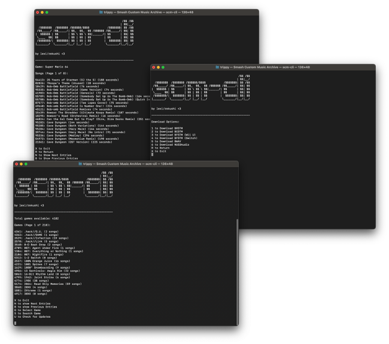

Install:
Ubuntu & Debian Based Linux:
curl -sSL https://raw.githubusercontent.com/RekuNote/nv/main/install.sh | sudo bash
sudo nv update
sudo nv install scm-cli
Other Linux & macOS:
curl -sL https://raw.githubusercontent.com/RekuNote/scm-cli/main/install.sh | bash
Windows:
Windows users must use scm-py.
Updating:
If you already have scm-cli installed, all you have to do is run scm-cli and press the U key.
Alternatively, you can run the update command with:
scm-cli --update
or:
scm-cli -u
